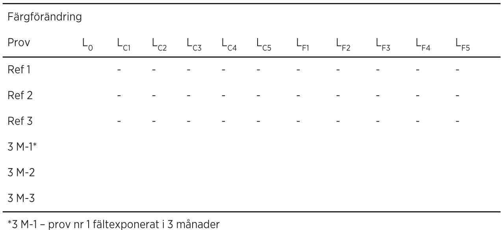
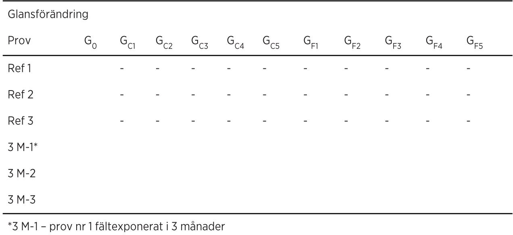

Klotterskydd definieras som en ytbehandling som förhindrar att färg fastnar på en yta eller som avsevärt underlättar färgsanering av en yta.
Ett permanent klotterskydd förväntas klara upprepade applicerings- och saneringscykler. Ett klotterskydd av typen offerskydd antas vara förbrukat efter en sanering och måste därefter återappliceras.
Metoden avser att bedöma ytbehandlingars beständighet och funktion som klotterskydd på betong.
Färg- och glansmätning genomförs på ytbehandlade provplattor samt efter sanering av ett antal färger. Resultaten jämförs mot referensprovplattor utan klotterskydd.
Förändringarna i färg och glans beräknas.
Provplattor av betong enligt SS-EN 1766, typ C (0,45).
Plattorna ska vara minst 300×300 mm eller 100×500 mm.
Borste för lätt rengöring av provplattor.
Ställning med 45 grader lutning för utomhusexponering av provplattor.
Ställning/ram för lodrätt placering av provplattor.
Färgmätare, till exempel Chroma Meter CR-410.
Glansmätare, till exempel Multi Gloss 268.
Mall för applicering av färger med en storlek på färgrutan minst 50×50 mm.
Mall för mätning av färg. Mätningen ska ske på samma ytor som appliceringsmallen.
Mall för mätning av glans. Mätningen ska ske på samma ytor som appliceringsmallen.
Specificerad uppsättning av färger
– blå vattenfast tuschpenna, lösningsmedel av alkohol
– blå spray, akrylbaserat lösningsmedel
– röd vattenfast tuschpenna, lösningsmedel av alkohol
– röd spray, alkydhartsbaserat lösningsmedel
– svart rostskyddsmassa i spray, med vax och tjära som lösningsmedel.
Högtryckstvätt
– vattenmängd: 20 l/min
– pumptryck: 120±10 bar
– vattentemperatur max 70 °C
– sprutvinkeln ska vara cirka 25 grader och jetvinkeln cirka 45 grader.
Sex provplattor borstas lätt på ovansidan under rinnande kranvatten och lagras därefter en vecka inomhus i rumstemperatur.
Klotterskyddet appliceras sedan enligt tillverkarens anvisning på tre av provplattorna. Appliceringen utförs på ovansidan på horisontellt placerade provplattor varefter de lagras tre dygn inomhus i rumstemperatur. De tre återstående provplattorna utgör referensprov. Färg- och glansmätning utförs på samtliga provplattor och värdena L0 och G0 noteras.
De tre provplattor som behandlats med klotterskydd placeras därefter på ställning med 45 grader lutning utomhus i tre månader, fritt exponerade mot söder.
Väderleksförhållanden vid utomhusexponeringen dokumenteras. Resterande tre provplattor placeras liggande inomhus i rumstemperatur.
Efter avslutad utomhusexponering lagras provplattorna en vecka i rumstemperatur. Eventuellt damm borstas av.
De fem specificerade färgerna appliceras på var och en av de tre provplattorna med hjälp av mallen. Färgen ska täcka hela rutan i mallen. Efter fyra dygn saneras provplattorna. Inför saneringen placeras provplattorna lodrätt i lämplig ram.
Saneringen utförs med hjälp av högtryckstvätt, med inställningar enligt beskrivningen i punkt 3 ovan. Munstycket förs med jämn hastighet fram och tillbaka över provplattan under två minuter. Avståndet mellan munstycke och provyta ska vara cirka 10 cm. Efter klottersaneringen lagras provplattorna en vecka inomhus i rumstemperatur. Färg- och glansmätning utförs därefter på de sanerade provplattorna enligt punkt 5.1 och 5.2 nedan.
Placera mallen för färgmätning över provplattan, gör tre mätningar med färgmätaren på varje markerad provyta/färg och notera ljushetstalet, L-värdet, för varje mätning. Beräkna medelvärdet för var och en av provytorna, LCi.
Placera mallen för glansmätning över provplattan, gör tio mätningar med glansmätaren på varje markerad provyta och notera glanstalet, G-värdet, för varje mätning. Använd metodik enligt ASTM D523-14, med vinkel 60 grader. Beräkna medelvärdet för var och en av provytorna, GCi.
Färgförändring uttryckt som skillnad i L-värde (separat för varje provyta/färg) beräknas enligt:
LFi = L0 – LCi
L0 – Ljushetstal före applicering av klotterskydd
LCi – Ljushetstal efter sanering av färg i
LFi – Färgförändring efter sanering av färg i
i – Respektive färgs nummer i listan under punkt 3
Glansförändring uttryckt som skillnad i G-värde (separat för varje provyta/färg) beräknas enligt:
GFi = G0i – GCi
G0 – Glans före applicering av klotterskydd
GCi – Glans efter sanering av färg i
GFi – Glansförändring efter sanering av färg i
i – Respektive färgs nummer i listan under punkt 3
Följande redovisas:
TABELL BILAGA AMA LES/1-1.

TABELL BILAGA AMA LES/1-2.
